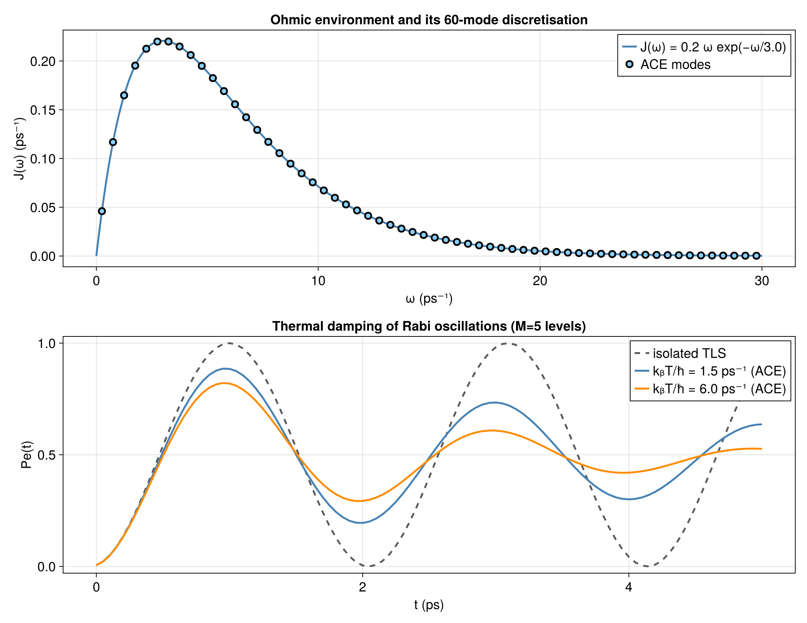

Thermal spin-boson dynamics using ACE
How does a thermal bath change the Rabi oscillations of a driven two-level system? We sample an Ohmic spectral density into oscillator modes, prepare their thermal states, and use ACE to construct the process seen by the spin. The observable is the excited-state population $P_e(t)$, compared with the isolated result.
scripts/thermal_spinboson_ace.jl generates the 60-mode, two-temperature comparison below. The model follows Cygorek and Gauger, J. Chem. Phys. 161, 074111 (2024); the hotter bath is an additional comparison on the same oscillator grid.
Model and spectral density
We set $\hbar=1$, express frequencies in $\mathrm{ps}^{-1}$, and work in the rotating frame of a resonant drive. The model is
\[H=\Omega S_x+\sum_k\left[ \omega_k b_k^\dagger b_k+g_k(b_k+b_k^\dagger)A +\frac{g_k^2}{\omega_k}A^2\right],\]
with the excited-state projector
\[A=|e\rangle\langle e| =\frac{I+Z}{2} =\frac{I}{2}+S_z.\]
The coupling is a state-dependent force on each oscillator. It vanishes when the spin is in $|g\rangle$, and it becomes $g_k(b_k+b_k^\dagger)$ when the spin is in $|e\rangle$. A superposition therefore sends the two spin components into different bath states, which reduces the spin coherence. The spin starts in $|g\rangle$ (Dn); Up denotes $|e\rangle$. The bath starts uncorrelated with it, with each oscillator thermal under its free Hamiltonian. The transverse drive does not commute with $A$, so this dephasing also changes the population oscillations.
Completing the square moves the oscillator by $g_k A/\omega_k$ and leaves the static shift $-g_k^2 A^2/\omega_k$. The counterterm in $H$ is the opposite shift, $g_k^2 A^2/\omega_k$, including the denominator. Because $A^2=A$, the code adds that shift as $(g_k^2/\omega_k)$ times ProjUp. The fluctuations and the dynamical back-action remain. With a finite Fock cutoff, the displaced oscillator itself is also only approximated.
The upper panel of the companion figure samples the smooth spectral density
\[J(\omega)=0.2\,\omega\exp[-\omega/(3\,\mathrm{ps}^{-1})].\]
The modes represent that function by a weighted comb, $J(\omega)\approx\sum_k g_k^2\delta(\omega-\omega_k)$. On a uniform midpoint grid the weights are
\[g_k^2=J(\omega_k)\,\Delta\omega, \qquad \omega_k=\omega_{\min}+(k-\tfrac12)\Delta\omega.\]
The bin width belongs in the coupling. Refining the grid should approximate the same $J(\omega)$.
using Logging
using LinearAlgebra
using ITensors
using ITensors.Ops: Trotter
using ProcessTensors
N_bath = 4
local_dim = 3
Ω = 3.0
ω_min, ω_max = 0.0, 30.0
thermal_frequency = 1.0 # θ = k_B T / ħ, in ps^-1, not kelvin
dt, nsteps = 0.20, 12
ace_cutoff, ace_maxdim = 1e-5, 64
spectral_density(ω) = 0.2 * ω * exp(-ω / 3)
Δω = (ω_max - ω_min) / N_bath
frequencies = [ω_min + (k - 0.5) * Δω for k in 1:N_bath]
couplings = sqrt.(spectral_density.(frequencies) .* Δω)
@assert all(>(0), frequencies)These cells use four modes, three levels per mode, and end at $t=2.2$ ps. Their coarse grid starts at $3.75\,\mathrm{ps}^{-1}$ and misses the low-frequency part of the bath. They demonstrate the workflow, not a converged continuum result. The figure uses 60 modes, five levels, $dt=0.05$ ps, $t=5$ ps, and $\theta=1.5,6\,\mathrm{ps}^{-1}$.
Prepare the spin and thermal modes
thermal_mode constructs the Gibbs state in the retained oscillator space:
\[\rho_k^{\mathrm{th}}=\frac{1}{Z_{k,M}} \sum_{n=0}^{M-1}e^{-n\omega_k/\theta}|n\rangle\langle n|, \qquad \theta=k_BT/\hbar.\]
The coupling OpSum uses site 1 for the oscillator and site 2 for the spin. Its last term is the counterterm $g_k^2 A^2/\omega_k$. Each mode carries its own copy, so the shift is included exactly once.
system_sites = siteinds("S=1/2", 1)
H_system = OpSum()
H_system += Ω, "Sx", 1
system = spin_system(system_sites, H_system)
initial_density = to_dm(MPS(system_sites, ["Dn"]))
bath_sites = siteinds("Boson", N_bath; dim=local_dim)
bath_liouville_sites = liouv_sites(bath_sites)
modes = BosonicMode[]
for k in 1:N_bath
ωk, gk = frequencies[k], couplings[k]
H_mode = OpSum()
H_mode += ωk, "N", 1
coupling = OpSum()
coupling += gk, "A", 1, "ProjUp", 2
coupling += gk, "Adag", 1, "ProjUp", 2
coupling += gk^2 / ωk, "ProjUp", 2
push!(modes, thermal_mode([bath_liouville_sites[k]], H_mode,
thermal_frequency; coupling=coupling))
endSilence the bath-size warning intended for a joint Dense construction.
bath = with_logger(() -> bosonic_bath(modes), NullLogger())ProcessTensors.BosonicBath
modes: 4
space: Liouville
site dims: 9, 9, 9, 9
bath Liouville dimension: 6561
mode summary:
[1] BosonicMode(dim=9, H_terms=1, coupling_terms=3, n_max=8)
[2] BosonicMode(dim=9, H_terms=1, coupling_terms=3, n_max=8)
[3] BosonicMode(dim=9, H_terms=1, coupling_terms=3, n_max=8)
[4] BosonicMode(dim=9, H_terms=1, coupling_terms=3, n_max=8)
Construct and evaluate the process
ACE combines the independent mode influences and compresses the temporal bonds. Its relative threshold retains singular values $\sigma_i>\epsilon \sigma_1$, subject to maxdim. The full bath density matrix, with formal dimension $M^{2N}$ in Liouville space, is never assembled.
process_tensor = build_process_tensor(
system; environment=bath, dt=dt, nsteps=nsteps,
method=ACE(cutoff=ace_cutoff, maxdim=ace_maxdim, compression=:canonzip),
sys_alg=Trotter{2}(), combine_alg=Trotter{2}(), progress=false,
)
trajectory = evolve(process_tensor, initial_density);
println((element_type=eltype(trajectory.states_liouville),))
println(sprint(show, foldl(*, last(trajectory.states_liouville))))(element_type = MPS{Liouville},)
ITensor ord=1
Dim 1: (dim=4|id=412|"Liouv,n=1,ptype=S=1/2,tstep=11")
NDTensors.Dense{ComplexF64, Vector{ComplexF64}}
4-element
0.1646712541580687 + 3.890495968109545e-16im
-0.283498718414869 - 0.029057382678021597im
-0.2834987184148689 + 0.029057382678020834im
0.8353318279506045 - 7.611308361001141e-16im
For this one-spin output, the excited population is the first diagonal entry divided by the trace. The helper is reused at every time; raw trace drift is reported separately. No density-matrix eigenvalues are clipped.
function one_spin_matrix(ρ)
tensor = foldl(*, ρ)
site = only(filter(i -> plev(i) == 0 && hastags(i, "Site"), inds(tensor)))
return ComplexF64.(Array(tensor, prime(site), site))
end
states = one_spin_matrix.(trajectory.states_hilbert)
traces = tr.(states)
@assert all(z -> isfinite(z) && abs(z) > 1e-12, traces)
population = [real(ρ[1, 1] / z) for (ρ, z) in zip(states, traces)]
isolated_population = sin.(Ω .* trajectory.times ./ 2) .^ 2
max_trace_error = maximum(abs.(traces .- 1))
println((final_time=last(trajectory.times), final_population=last(population),
isolated_final_population=last(isolated_population),
max_trace_error=max_trace_error, max_pt_bond=maxlinkdim(process_tensor)))
@assert all(p -> isfinite(p) && -2e-3 <= p <= 1 + 2e-3, population)
@assert max_trace_error < 2e-3(final_time = 2.2, final_population = 0.1646707466249323, isolated_final_population = 0.024883704020735354, max_trace_error = 4.1337845906319615e-6, max_pt_bond = 43)
Interpret the loss of Rabi contrast

The upper panel shows where the continuum is sampled. Most spectral weight lies near the exponential cutoff scale; the midpoint grid also resolves the low-frequency modes that the four-mode example misses.
In the lower panel, the isolated spin follows
\[P_e^{\mathrm{isolated}}(t)=\sin^2(\Omega t/2).\]
It repeatedly reaches populations zero and one, with period $2\pi/\Omega\simeq2.09$ ps. The bath-coupled curves develop lower peaks and higher troughs: population transfer becomes less complete on successive cycles. The hotter curve has a smaller first peak and is closer to $1/2$ by the end of the plotted interval.
The $|g\rangle$ component leaves each oscillator undisplaced, while $|e\rangle$ drives it with $g_k(b_k+b_k^\dagger)$. The bath therefore retains which-path information, and the coherence that sustains the driven rotations decays. Temperature changes the initial oscillator fluctuations; here it changes the damping even though $J(\omega)$ and the couplings are held fixed. This is a comparison over the displayed time window, not a general assertion that every hotter bath damps every system faster.
\[P_e\simeq1/2\]
specifies one observable. It neither shows that the spin is maximally mixed nor establishes a Gibbs state: off-diagonal coherence may remain. A finite, discretised bath can also exhibit later recurrences.
Resolve the thermal oscillator space
The local cutoff is especially important when $\theta/\omega_k$ is large. For an untruncated free oscillator, the total initial Gibbs probability above the retained levels is
\[\Pr(n\ge M)=e^{-M\omega_k/\theta}.\]
It is a useful preparation diagnostic, not a bound on the eventual population error.
thermal_tail = thermal_frequency == 0 ? zeros(N_bath) :
exp.(-local_dim .* frequencies ./ thermal_frequency)
println((largest_omitted_Gibbs_weight=maximum(thermal_tail),))(largest_omitted_Gibbs_weight = 1.300729765406762e-5,)
At the companion grid's lowest frequency $\omega_1=0.25\,\mathrm{ps}^{-1}$, five levels omit about 0.43 of the infinite-oscillator Gibbs weight at $\theta=1.5$, and 0.81 at $\theta=6$. The simulated truncated Gibbs states are normalised, but those numbers make local-dimension convergence essential before interpreting the curves quantitatively as a continuum thermal bath. Bath-induced displacement can require additional levels even at zero temperature. Timestep, frequency window/grid, and ACE truncation must also be converged; a small trace error or an unreached bond cap does not settle these questions.
These edits test which changes in Rabi contrast are physical and which come from discretisation or compression.
- Increase
local_dimat fixed mode grid and temperature, particularly for the hotter bath. Do the peak heights and troughs stabilise? - Place more samples where $|J(\omega)|$ is largest and fewer where it is small. Give each sample a bin width or quadrature weight so that $g_k^2$ still represents the same $J(\omega)$. Does that redistribution change the Rabi oscillations?